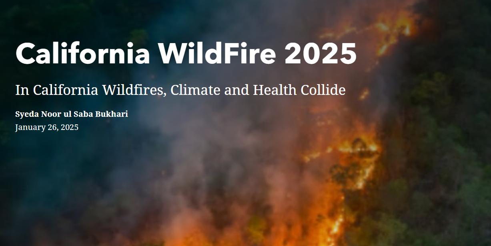
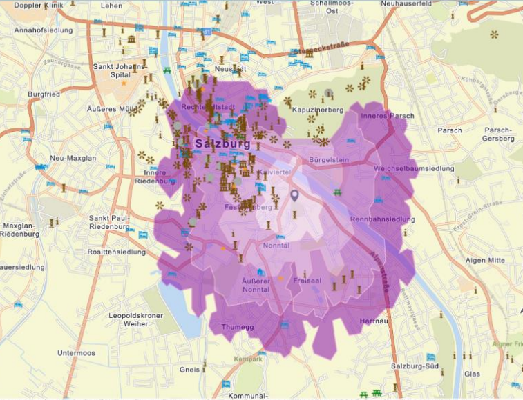

01 · Weather / WebGIS
Global Rainfall Monitoring Web Map
A Leaflet-based interactive viewer for exploring global rainfall patterns through the RainViewer weather maps API.
Open web map ↗Web maps, Earth observation and spatial storytelling designed to turn complex information into experiences people can explore.
A Leaflet-based interactive viewer for exploring global rainfall patterns through the RainViewer weather maps API.
Open web map ↗
An interactive story map connecting thermal hotspots, active fire activity and emergency incidents.
Open StoryMap ↗
An interactive spatial analysis exploring tourism locations and accessibility across the Salzburg region.
Open ArcGIS map ↗